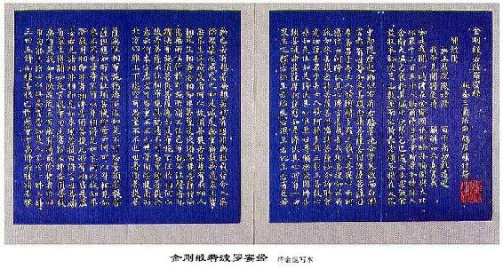

○能淨業障分 第十六
「復次，須菩提！善男子、善女人，受持、讀誦此經，若為人輕賤，是人先世罪業應墮惡道，以今世人輕賤故，先世罪業即為消滅，當得阿耨多羅三藐三菩提。須菩提！我念過去無量阿僧祇劫，於然燈佛前，得值八百四千萬億那由他諸佛，悉皆供養承事，無空過者。若復有人於後末世，能受持、讀誦此經所得功德，於我所供養諸佛功德，百分不及一，千萬億分乃至算數譬喻所不能及。須菩提！若善男子、善女人，於後末世，有受持、讀誦此經所得功德，我若具說者，或有人聞，心即狂亂，狐疑不信。須菩提！當知是經義不可思議，果報亦不可思議。」
○究竟無我分 第十七
爾時，須菩提白佛言：「世尊！善男子、善女人，發阿耨多羅三藐三菩提心，雲何應住？雲何降伏其心？」佛告須菩提：「善男子、善女人，發阿耨多羅三藐三菩提心者，當生如是心：我應滅度一切眾生。滅度一切眾生已，而無有一眾生實滅度者。何以故？須菩提！若菩薩有我相、人相、眾生相、壽者相，即非菩薩。所以者何？須菩提！實無有法發阿耨多羅三藐三菩提心者。須菩提！於意雲何！如來於然燈佛所，有法得阿耨多羅三藐三菩提不？」「不也，世尊！如我解佛所說義，佛於然燈佛所，無有法得阿耨多羅三藐三菩提。」佛言：「如是，如是！須菩提！實無有法如來得阿耨多羅三藐三菩提。須菩提！若有法如來得阿耨多羅三藐三菩提者，然燈佛則不與我授記：汝於來世當得作佛，號釋迦牟尼。以實無有法得阿耨多羅三藐三菩提，是故然燈佛與我授記，作是言：『汝於來世當得作佛，號釋迦牟尼。』何以故？如來者，即諸法如義。若有人言：如來得阿耨多羅三藐三菩提，須菩提！實無有法佛得阿耨多羅三藐三菩提。須菩提！如來所得阿耨多羅三藐三菩提，於是中無實無虛，是故如來說一切法皆是佛法。須菩提！所言一切法者，即非一切法，是故名一切法。須菩提！譬如人身長大。」須菩提言：「世尊！如來說人身長大，即為非大身，是名大身。」「須菩提！菩薩亦如是。若作是言：我當滅度無量眾生，即不名菩薩。何以故？須菩提，實無有法名為菩薩。是故佛說：一切法無我、無人、無眾生、無壽者。須菩提！若菩薩作是言：我當莊嚴佛土，是不名菩薩。何以故？如來說莊嚴佛土者，即非莊嚴，是名莊嚴。須菩提！若菩薩通達無我法者，如來說名真是菩薩。
○一體同觀分 第十八
「須菩提！於意雲何？如來有肉眼不？」「如是，世尊！如來有肉眼。」「須菩提，於意雲何？如來有天眼不？」「如是，世尊！如來有天眼。」「須菩提！於意雲何？如來有慧眼不？」「如是，世尊！如來有慧眼。」「須菩提！於意雲何？如來有法眼不？」「如是，世尊，如來有法眼。」「須菩提！於意雲何？如來有佛眼不？」「如是，世尊！如來有佛眼。」「須菩提！於意雲何？如恆河中所有沙，佛說是沙不？」「如是，世尊！如來說是沙。」「須菩提！於意雲何？如一恆河中所有沙，有如是沙等恆河，是諸恆河所有沙數佛世界如是寧為多不？」「甚多，世尊！」佛告須菩提：「爾所國土中所有眾生若干種心，如來悉知。何以故？如來說諸心，皆為非心，是名為心。所以者何？須菩提！過去心不可得，現在心不可得，未來心不可得。
○法界通化分 第十九
「須菩提！於意雲何？若有人滿三千大千世界七寶以用佈施，是人以是因緣，得福多不？」「如是，世尊！此人以是因緣，得福甚多。」「須菩提！若福德有實，如來不說得福德多；以福德無故，如來說得福德多。
○離色離相分 第二十
「須菩提！於意雲何？佛可以具足色身見不？」「不也，世尊！如來不應以具足色身見。何以故？如來說具足色身，即非具足色身，是名具足色身。」「須菩提！於意雲何？如來可以具足諸相見不？」「不也，世尊！如來不應以具足諸相見。何以故？如來說諸相具足，即非具足，是名諸相具足。」
○非說所說分 第二十一
「須菩提！汝勿謂如來作是念：我當有所說法。莫作是念！何以故？若人言如來有所說法，即為謗佛，不能解我所說故。須菩提！說法者，無法可說，是名說法。」爾時慧命須菩提白佛言：「世尊！頗有眾生於未來世聞說是法，生信心不？」佛言：「須菩提！彼非眾生，非不眾生。何以故？須菩提！眾生眾生者，如來說非眾生，是名眾生。」
○無法可得分 第二十二
須菩提白佛言：「世尊！佛得阿耨多羅三藐三菩提，為無所得耶？」佛言：「如是，如是！須菩提！我於阿耨多羅三藐三菩提，乃至無有少法可得，是名阿耨多羅三藐三菩提。
○淨心行善分 第二十三
「復次，須菩提！是法平等，無有高下，是名阿耨多羅三藐三菩提。以無我、無人、無眾生、無壽者，修一切善法，即得阿耨多羅三藐三菩提。須菩提！所言善法者，如來說即非善法，是名善法。
○福智無比分 第二十四
「須菩提！若三千大千世界中所有諸須彌山王，如是等七寶聚，有人持用佈施。若人以此般若波羅蜜經乃至四句偈等，受持、讀誦，為他人說，於前福德百分不及一，百千萬億分乃至算數譬喻所不能及。
○化無所化分 第二十五
「須菩提！於意雲何？汝等勿謂如來作是念：我當度眾生。須菩提！莫作是念。何以故？實無有眾生如來度者。若有眾生如來度者，如來即有我、人、眾生、壽者。須菩提！如來說有我者，即非有我，而凡夫之人以為有我。須菩提！凡夫者，如來說即非凡夫，是名凡夫。
○法身非相分 第二十六
「須菩提！於意雲何？可以三十二相觀如來不？」須菩提言：「如是，如是！以三十二相觀如來。」佛言：「須菩提！若以三十二相觀如來者，轉輪聖王即是如來。」須菩提白佛言：「世尊！如我解佛所說義，不應以三十二相觀如來。」爾時，世尊而說偈言：
若以色見我，以音聲求我，是人行邪道，不能見如來。
○無斷無滅分 第二十七
「須菩提！汝若作是念：如來不以具足相故得阿耨多羅三藐三菩提。須菩提！莫作是念：如來不以具足相故得阿耨多羅三藐三菩提。須菩提！汝若作是念，發阿耨多羅三藐三菩提心者，說諸法斷滅。莫作是念！何以故？發阿耨多羅三藐三菩提心者，於法不說斷滅相。
○不受不貪分 第二十八
「須菩提！若菩薩以滿恆河沙等世界七寶持用佈施，若復有人知一切法無我得成於忍，此菩薩勝前菩薩所得功德。何以故？須菩提！以諸菩薩不受福德故。」須菩提白佛言：「世尊！雲何菩薩不受福德？」「須菩提！菩薩所作福德，不應貪著，是故說不受福德。
○威儀寂淨分 第二十九
「須菩提！若有人言：如來若來、若去、若坐、若臥，是人不解我所說義。何以故？如來者，無所從來，亦無所去，故名如來。
○一合理相分 第三十
「須菩提！若善男子、善女人，以三千大千世界碎為微塵，於意雲何？是微塵眾，寧為多不？」須菩提言：「甚多，世尊！何以故？若是微塵眾實有者，佛則不說是微塵眾。所以者何？佛說微塵眾，即非微塵眾，是名微塵眾。世尊！如來所說三千大千世界，即非世界，是名世界。何以故？若世界實有者，即是一合相。如來說一合相，即非一合相，是名一合相。」「須菩提！一合相者，即是不可說，但凡夫之人貪著其事。
○知見不生分 第三十一
「須菩提！若人言佛說我見、人見、眾生見、壽者見，須菩提！於意雲何？是人解我所說義不？」「不也，世尊！是人不解如來所說義。何以故？世尊說我見、人見、眾生見、壽者見，即非我見、人見、眾生見、壽者見，是名我見、人見、眾生見、壽者見。須菩提！發阿耨多羅三藐三菩提心者，於一切法，應如是知，如是見，如是信解，不生法相。須菩提！所言法相者，如來說即非法相，是名法相。
○應化非真分 第三十二
「須菩提！若有人以滿無量阿僧祇世界七寶持用佈施，若有善男子、善女人發菩提心者，持於此經，乃至四句偈等，受持、讀誦、為人演說，其福勝彼。雲何為人演說，不取於相？如如不動。何以故？
一切有為法，如夢幻泡影。如露亦如電，應作如是觀。」
佛說是經已，長老須菩提及諸比丘、比丘尼，優婆塞、優婆夷，一切世間天、人、阿修羅，聞佛所說，皆大歡喜，信受奉行。

本章完!